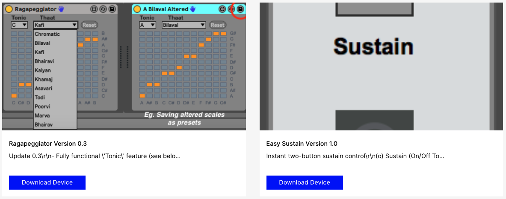

Publications
ISMIR 2024 Late Breaking Demo
Groove Transfer VST for Latin American Rhythms
M.Phil (Music Composition) Thesis - Trinity College Dublin - 2018-2019
Exploring Carnatic Classical Music in Drum & Bass : Towards a New Sound of the Asian Underground
Presentations
Max for Live Devices

GitHub